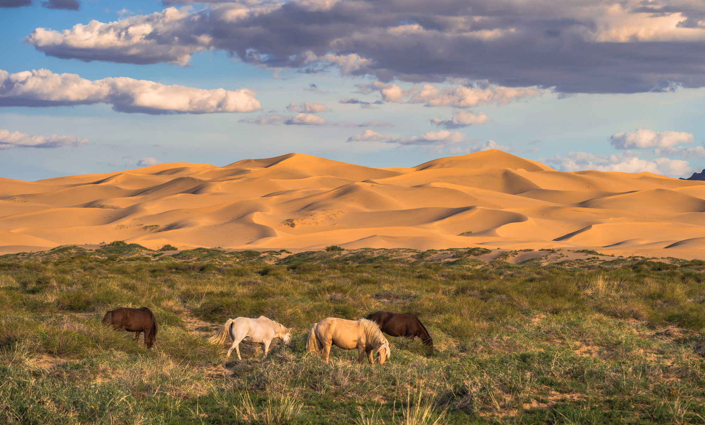
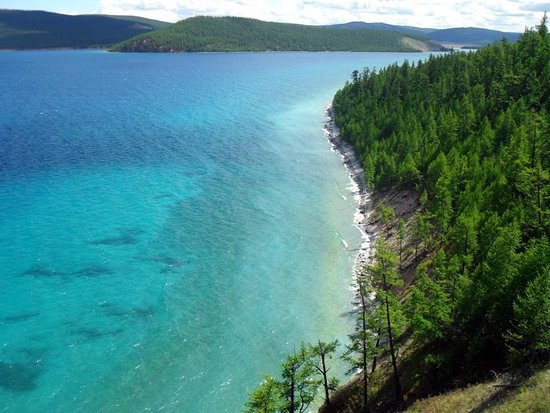
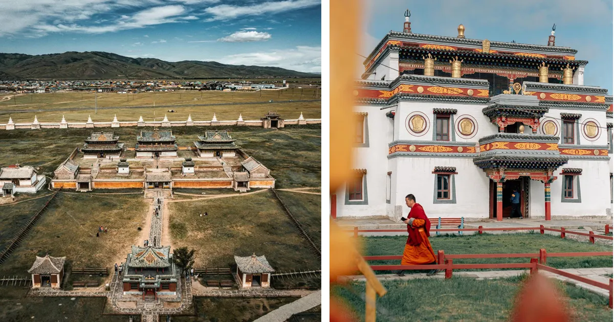

Discover Mongolia's Wonders
Mongolia is a land of vast steppes, dramatic mountains, and ancient traditions. From the endless Gobi Desert to the crystal-clear lakes and the vibrant Naadam Festival, Mongolia offers breathtaking natural beauty and a unique nomadic culture. Here are some must-visit places that capture the spirit of Mongolia!
Watch: Mongolia's Majestic Landscapes
Gallery: Top Destinations




- Gobi Desert: Explore the vast sand dunes, flaming cliffs, and unique wildlife of one of the world's largest deserts.
- Khuvsgul Lake: Known as the "Blue Pearl of Mongolia," this pristine lake is surrounded by mountains and forests, perfect for nature lovers.
- Erdene Zuu Monastery: The oldest Buddhist monastery in Mongolia, located in the ancient city of Kharkhorin, rich in history and culture.
Map: Gobi Desert Location
Explore these incredible places and immerse yourself in the rich culture and stunning landscapes of Mongolia!